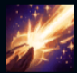
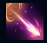
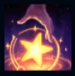
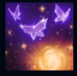
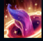

Zoe
| Zoe The Aspect of Twilight | |
|---|---|
| Release date | 21.11.2017 |
| Class | Burst |
| Positions | Middle |
| Resource | Mana |
| Range type | Ranged |
| Adaptive type | Magic |
| Base statistics | |||
| Health | 560 – 2124 | Mana | 425 – 850 |
| Health regen. | 6.5 – 16.7 |
Mana regen. | 8 – 19.05 |
| Armor | 21 – 80.5 | Attack damage | 58 – 114.1 |
| Magic resist. | 30 – 38.5 | Crit. damage | 175% |
| Move. speed | 340 | Attack range | 550 |
Zoe este întruchiparea poznelor, imaginației și schimbării. Având rolul de mesageră cosmică a Muntelui Targon, vestește evenimente majore care remodelează lumi întregi. Simpla ei prezență tulbură firea lucrurilor, provocând uneori catastrofe fără ca ea să aibă nici cea mai mică rea intenție. Probabil că asta explică nonșalanța cu care Zoe își face datoria, preferând să se joace, să păcălească muritori sau să se distreze în fel și chip în loc să se ocupe rapid de ce e de făcut. Întâlnirile cu Zoe pot fi prilejuri de bucurie și revelație, dar sunt mereu mai semnificative decât par... și deosebit de periculoase. |  |
MAI MULTE SCÂNTEI! După ce Zoe folosește o vrajă, următorul ei atac de bază provoacă daune magice bonus. |
||
|---|---|---|---|---|
 |
STEA RĂTĂCITOARE Zoe lansează un proiectil pe care-l poate redirecționa în timpul zborului, provocând cu atât mai multe daune cu cât se deplasează mai departe în linie dreaptă. |
|||
 |
FURT DE VRĂJI Când inamicii folosesc vrăji de invocator sau active ale obiectelor, Zoe poate ridica frânturi din acestea pentru a le folosi și ea o dată. De fiecare dată când folosește o vrajă de invocator, primește 3 proiectile care sunt lansate către cea mai apropiată țintă. |
|||
|  |
BALONAȘ BUCLUCAȘ Face ținta să devină somnoroasă, apoi să adoarmă. Prima sursă de daune care lovește ținta îi provoacă daune duble (până la o limită maximă), apoi aceasta se trezește. |
|||
 |
ȘOTRON PRINTRE STELE Te deplasezi instantaneu într-un loc din apropiere timp de o secundă, apoi revii în poziția din care ai plecat. |